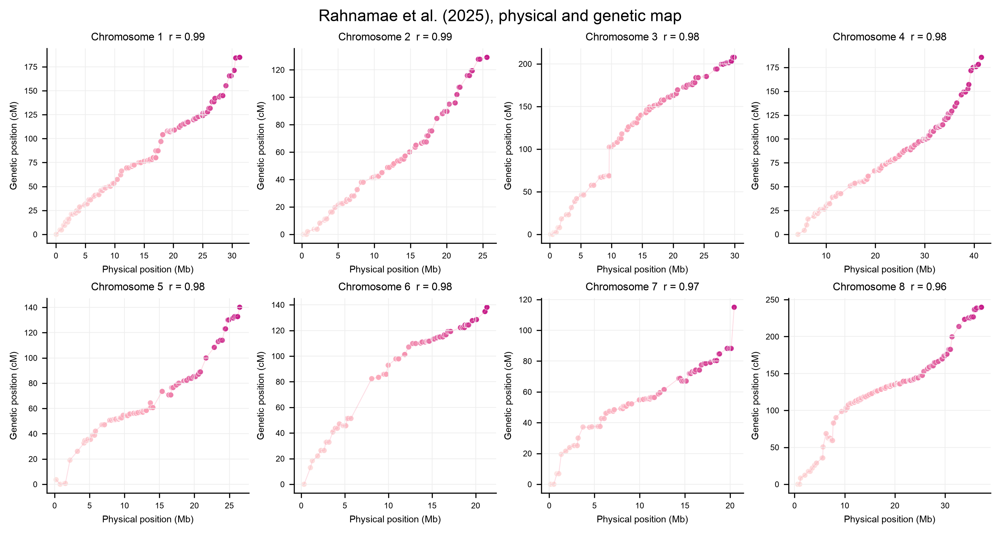
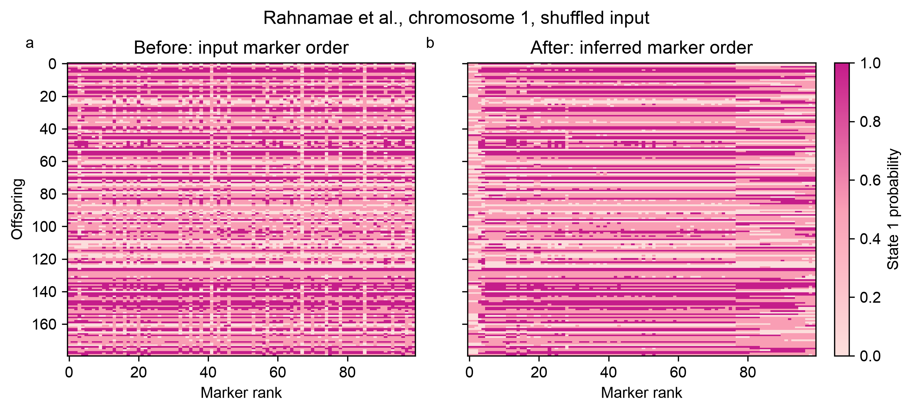
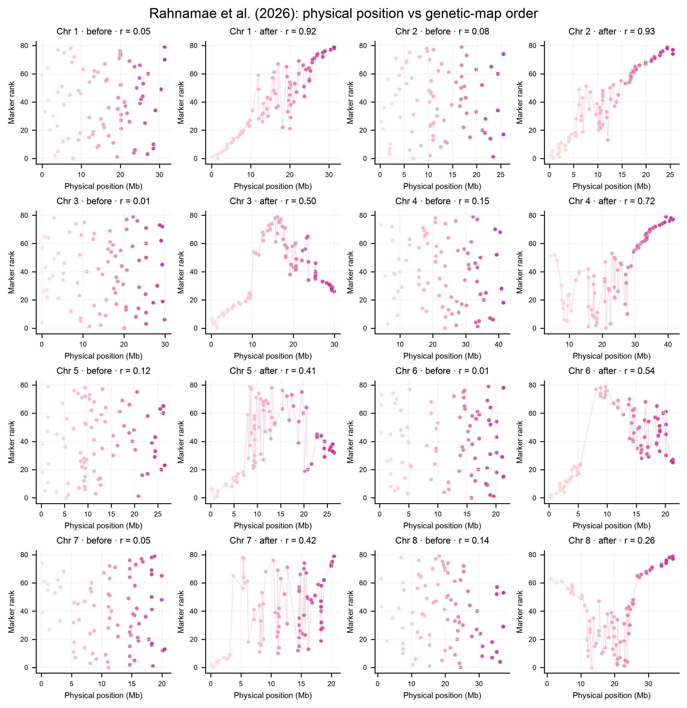

Plotting
Every fitted map has a plot method:
The probability panel uses the same light-pink → pink → magenta state scale as the before/after marker-order plots: state 0 is light, uncertain values near 0.5 are pink, and state 1 is dark magenta. Override the three anchors when needed:
The first panel displays state probabilities along the inferred map. The second panel compares inferred order with reference positions when available; otherwise it shows 95% bootstrap rank intervals. The palette is color-vision friendly, and SVG is recommended for scalable line and text output.
Contemporary hybridization example
The published example is loaded directly from the source repository:
import softmap
data = softmap.contemporary_hybridization(chromosome=1, markers=100)
data = data.shuffled(seed=11)
mapping = softmap.fit(
data,
bootstrap=20,
confidence=0.8,
seed=7,
bin_threshold=0.005,
)
mapping.plot("contemporary_hybridization.svg")
The source cross is F2-like and includes NN, NS, and SS calls. For this binary software demonstration, NN becomes 0.01, SS becomes 0.99, and NS or missing calls become 0.5. The reference positions are the published centimorgan coordinates. This conversion tests loading, fitting, uncertainty summaries, and plotting, but it does not perform full F2 phase inference and should not be treated as a revised biological map.
Source data: Rahnamae et al., Contemporary_hybridization
Article: Rahnamae et al. (2026), New Phytologist 249: 1542–1557, doi:10.1111/nph.70779. The article was first published online in December 2025; its final citation year is 2026.
Physical and genetic map
The source table also contains physical positions in marker names and published genetic positions in centimorgans. Load and plot all eight chromosomes with:
positions = softmap.contemporary_map_positions()
softmap.plot_physical_vs_genetic(
positions,
"physical_vs_genetic_map.png",
)
The light-to-dark marker gradient follows physical position and uses #fde0dd,
#fa9fb5, and #c51b8a.

Marker order before and after
Use the same fitted map to compare the original marker columns with the inferred order:
The flagship example first shuffles the published marker columns with a fixed seed. Both panels contain the same probabilities and offspring. Only the marker columns change, making the ordering step visible without changing the underlying data.

Physical position before and after
Fit one map per chromosome, then place each before/after pair in a 4×4 figure:
chromosome_maps = [
softmap.fit(
softmap.contemporary_hybridization(
chromosome=chromosome,
markers=80,
).shuffled(seed=10 + chromosome),
bootstrap=10,
confidence=0.8,
seed=20 + chromosome,
bin_threshold=0.005,
)
for chromosome in range(1, 9)
]
softmap.plot_physical_order_grid(
chromosome_maps,
"physical_order_before_after_grid.png",
)
Physical position is compared with shuffled input rank and inferred map rank. Chromosome orientation is arbitrary and is aligned to physical position for display. The vertical axes are labeled as ranks because SoftMap does not estimate centimorgan distances.
